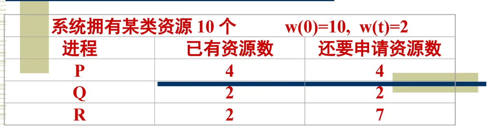

操作系统原理 · 第 5 章 资源分配与调度
5.5 银行家算法
有序资源分配法用「规定申请次序」来破坏环路条件，但它要求进程的实际使用顺序服从资源编号。还有一条更宽松的路：不规定次序，而是在每次分配之前先算一算「这笔资源给出去以后，系统还安不安全」，不安全就不给。这就是银行家算法——一种资源分配拒绝策略。
1. 从银行贷款说起
算法的名字来自一个比喻。银行家拥有一笔周转资金，客户要求分期贷款。这里有一个关键前提：如果客户能够得到所有各期贷款，就一定能够归还贷款；否则就一定不能归还贷款。于是银行家应当谨慎地贷款，保证每个客户都能肯定得到后面的所有各期贷款，防止出现坏帐。
把角色一一对应过来，就是一个资源分配问题：
- 操作系统——银行家；
- 操作系统管理的资源——周转资金；
- 进程——要求贷款的客户。
银行家不能把资金借到「看起来不够还」的地步，操作系统同样不能把资源分到「将来可能转不动」的地步。用「先算后给」代替「先给再救」，这就是银行家算法避免死锁的基本思想。
2. 系统模型
把上面的比喻写成模型。设有 m 个不同类型的同类资源，用向量 w 表示在 t 时刻各类资源中未分配的资源数：
w(t) = { w1, w2, … wj, … wm }设有 n 个进程，在 t 时刻对 m 个资源的最大需求量构成资源请求矩阵 d(t)，在 t 时刻对 m 个资源的占用量构成资源分配矩阵 a(t)：
d(t) = [ d11, d12, …, d1m
d21, d22, …, d2m
... … … …
dn1, dn2, …, dnm ]
a(t) = [ a11, a12, …, a1m
a21, a22, …, a2m
... … … …
an1, an2, …, anm ]系统对这三个量的操作有三种：
- 申请资源：一个进程 pi 申请 n 个 j 类资源，要求 n ≤ wj(t)，即申请量不能超过系统中该类资源当前未分配的数量；
- 分配资源：把 n 个 j 类资源分配给进程 pi，此时三条账同时变化——
aij(t) = aij(t) + n; /* 占用增加 */
dij(t) = dij(t) - n; /* 还需申请量减少 */
wj(t) = wj(t) - n; /* 未分配资源减少 */- 释放资源：一个进程 pi 释放 m 个 j 类资源，账目变化为——
aij(t) = aij(t) - m; /* 占用减少 */
wj(t) = wj(t) + m; /* 未分配资源增加 */还有两条前提与原则：
- 当新进程进入系统时，必须说明对各个资源的最大需求量 d(0)，并且不能超过系统中各资源的总数 w(0)；
- 当进程申请一类资源时，如果同意该申请后不会导致系统进入不安全状态，才同意该请求；否则不同意该请求，客户必须等待。
3. 系统的安全状态
什么样的状态算「安全」？定义是这样考虑的：在最坏情况下，每个客户只有获得所有资源后才能归还所有资源。那么，目前系统中是否有足够的资源满足其中一个进程的最大需求资源？如果能够找到，就假定该进程运行完毕后归还它所占用的所有资源，然后再寻找下一个进程。如此反复下去，如果所有的进程都能运行完，所有的资源最终都被收回，则该状态是安全的。换句话说，安全状态就是存在一个资源分配序列，可以使得所有进程都运行直到结束（不会导致死锁）；这个序列称为安全序列。
于是「同意还是拒绝」的判据就有了操作办法：假设把资源借出去，然后试着找一个安全序列；找得到就借，找不到就不借。也正因为要「试算」，银行家算法属于资源的分配拒绝策略——它靠拒绝某些请求来保持系统安全。
4. 一个例子
课件给出的小例子是：系统拥有某类资源 10 个，即 w(0) = 10，当前 w(t) = 2（已经分出去 8 个），三个进程的占用与需求如下表。

按上面「寻找安全序列」的办法检查这个状态，可以一步步推下去：当前未分配的 2 个资源只够满足 Q 追加的 2 个需求，于是假定先把资源给 Q，Q 得到全部所需后运行完毕，归还它占用的全部 4 个资源，未分配资源变为 4 个；这 4 个正好满足 P 还需的 4 个，P 运行完毕归还 8 个，未分配资源变为 8 个；8 个足以满足 R 还需的 7 个，R 也能运行完毕。三个进程都能跑完、资源全部收回，所以该状态是安全的，对应的安全序列为 Q → P → R。
反之，如果某个状态无论如何都找不到这样的推进顺序，它就是不安全状态。需要强调的是：不安全状态只是「有可能」死锁，并不是一定死锁——它意味着系统已经失去了「保证不发生死锁」的能力。
5. 银行家算法的缺点
- 每个进程必须事先说明对各类资源的最大需求量。这是一个很强的要求：程序在运行前就要把一辈子要用的资源全报出来，实际中很难做到，而报得不准则整个算法失效；
- 算法有些保守，总是考虑最坏情况。有时为了避免死锁，可能拒绝某一请求，即使这一请求实际上并不会导致死锁。过于谨慎和开销较大，是银行家算法的主要障碍——每次分配都要试算一遍安全序列，系统负担不轻。
本节小结
- 银行家算法用银行贷款作比喻：操作系统是银行家，资源是周转资金，进程是要求分期贷款的客户；只有确信客户能还清，才把钱借出去；
- 系统模型中有三个量：未分配资源向量 w(t)、资源请求矩阵 d(t)、资源分配矩阵 a(t)；申请、分配、释放三种操作都是在修改这三个量，申请量不能超过 wj(t)；
- 新进程进系统时必须声明各资源的最大需求量 d(0) 且不超过总数 w(0)；进程每次申请资源，只有在「同意后系统仍处于安全状态」时才被批准，否则必须等待；
- 安全状态＝存在一个安全序列使所有进程都能运行完；判断办法是「试算安全序列」，算得出来就分配，算不出来就拒绝，因此银行家算法又称资源分配拒绝策略；
- 不安全状态不等于已经死锁，只表示不再有「保证不死锁」的能力；
- 银行家算法的两大障碍：必须预先知道最大需求量，以及过于谨慎、开销较大。